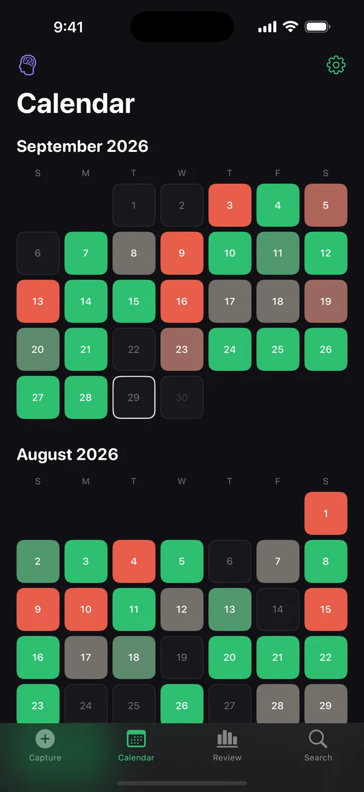
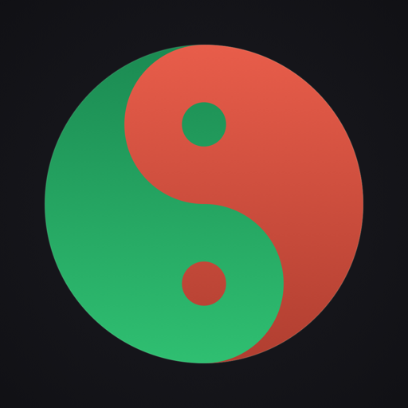
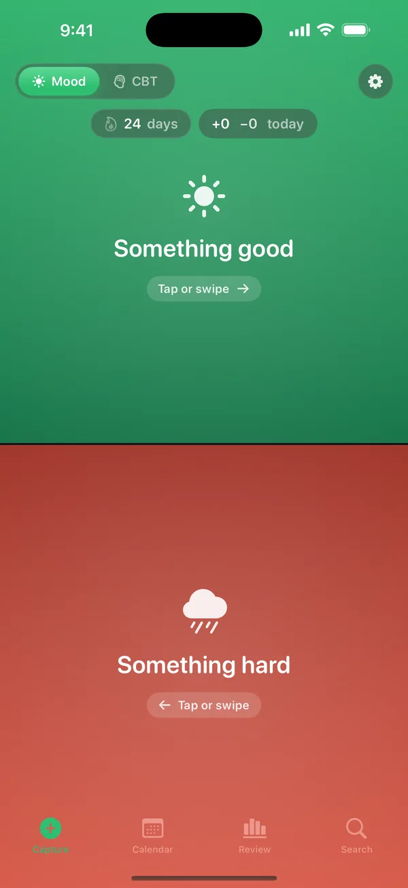
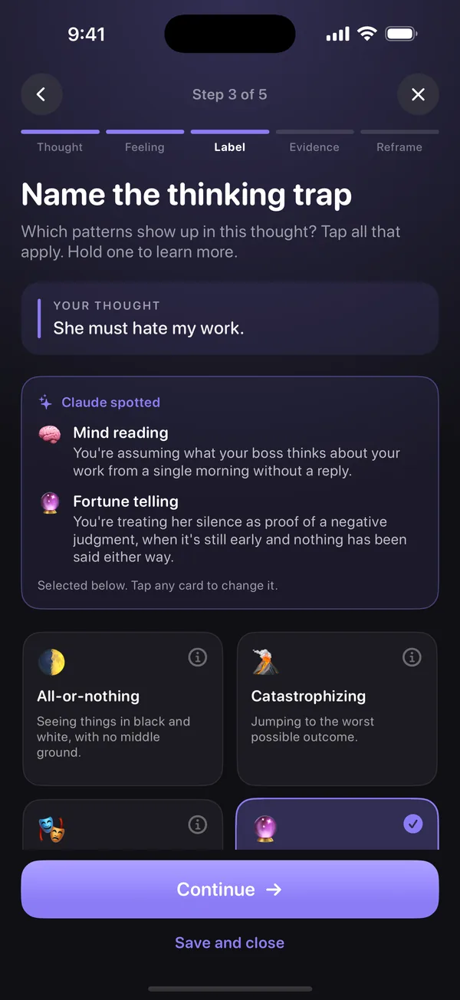
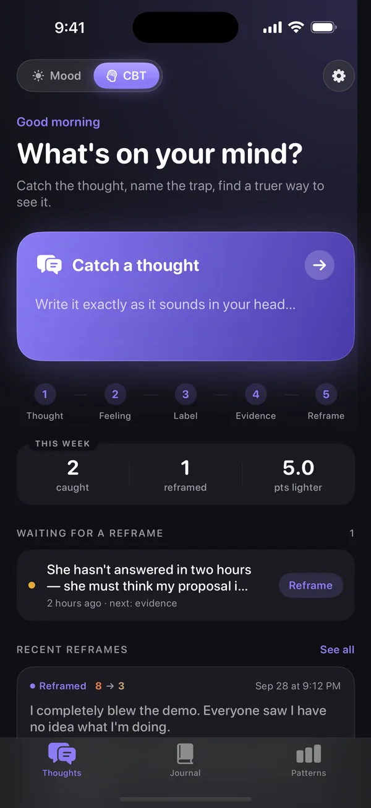
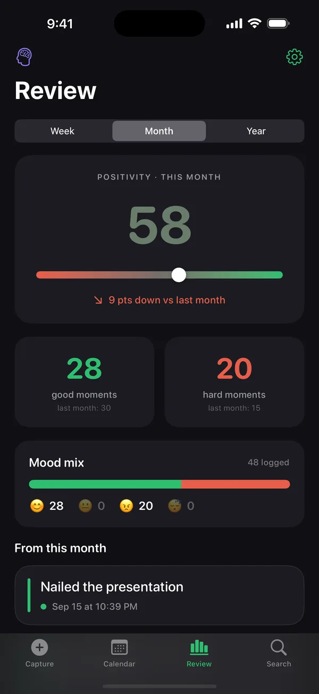
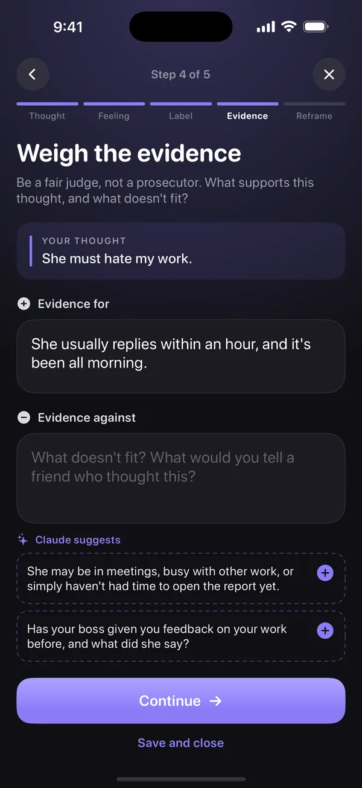
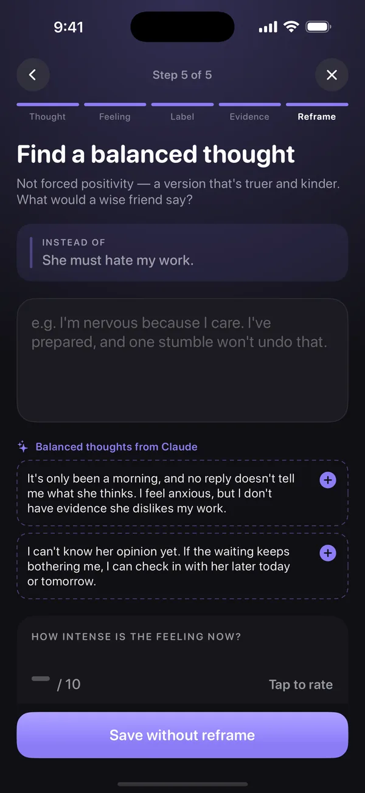
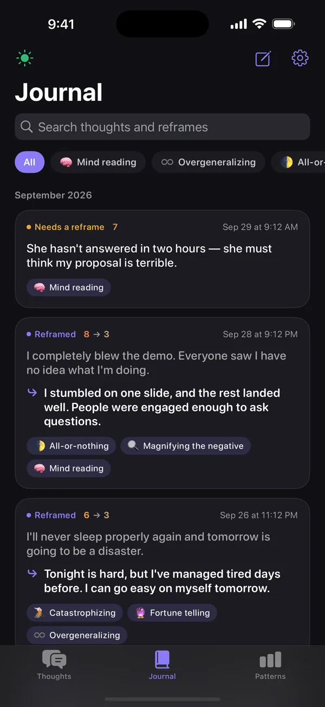
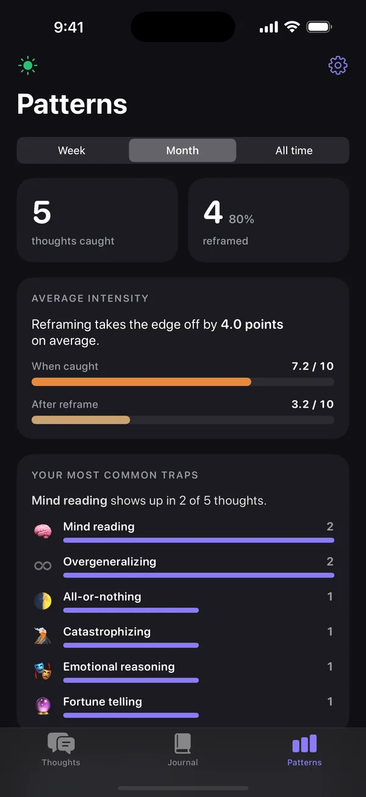

ثبت حال
روزی دو لمس. سالی پر از رنگ.
- یک نیمه را بزن — خوب یا سخت — و یک خط بنویس. کمتر از ده ثانیه.
- هر روز بین مرجانی و سبز رنگ میگیرد و الگوها با یک نگاه پیدا میشوند.
- مرور هفتگی، ماهانه و سالانه، بههمراه بازپخشِ داستانگونهٔ سالت.

ساختهٔ dbaydev LLCحالنامه — دفترِ حالِ روزهای تو
حالنامه دفترچهای خصوصی با دو حالت است. ثبت حال: برای لحظهای خوب سبز را بزن و برای لحظهای سخت مرجانی را، و ببین سالت چطور رنگ میگیرد. ثبت افکار: وقتی فکری روی دلت سنگینی میکند، با برگهٔ ثبت افکارِ درمان شناختیرفتاری (CBT) پیش برو — فکر را بگیر، تلهٔ فکری را نام ببر، شواهد را بسنج و نگاهی مهربانتر و واقعیتر به آن پیدا کن.


حالنامه چیست
حالنامه از یک عادت سادهٔ شبانه شروع شد: هر شب یک چیز خوب و یک چیز سخت را بنویس و آخر سال به کل تصویر نگاه کن. حافظهٔ ما سوگیری منفی دارد — روزهای بد فریاد میزنند و لحظههای خوب زمزمه میکنند. یک دفتر، هر دو را صادقانه نگه میدارد.
بعضی لحظههای سخت با فکری همراهاند که رها نمیکند: «حتماً فکر میکنند به درد نمیخورم.» «همیشه خرابش میکنم.» برای اینها، حالنامه حالت دومی دارد که بر پایهٔ درمان شناختیرفتاری ساخته شده؛ همان برگهٔ ثبت افکاری که بسیاری از درمانگران CBT برای تمرینِ بین جلسهها به مراجعانشان میدهند — اینبار آرام، سریع و واقعاً دلپذیر برای پر کردن.
دو حالت، یک لمس
یک کلید Mood | CBT بالای اپ هست. هر حالت صفحهٔ اصلی، تاریخچه و رنگهای خودش را دارد — و دادههایت در هر دو سر جایشان میمانند.

ثبت حال

ثبت افکار جدید در نسخهٔ ۱٫۶ · آیفون
ثبت حال
صفحه دو نیمه است: سبز برای چیزی خوب، مرجانی برای چیزی سخت. همان را بزن که با آن لحظه جور است.
یک جمله کافی است — «قهوه با یک دوست قدیمی»، «جلسهٔ سخت». ذخیره کن و به روزت برس.
هر روز بر اساس آنچه ثبت کردهای بین مرجانی و سبز رنگ میگیرد. هفتهها، ماهها و سال، تصویری میسازند.

ثبت افکار
پنج قدم کوتاه. بعد از هر قدم میتوانی ذخیره کنی و بعداً تمامش کنی — خیلی وقتها بازنگری، یک ساعت بعد از آن فکر آسانتر است.
دقیقاً همانطور که در ذهنت میگذرد بنویسش، بههمراه اینکه چه اتفاقی افتاده بود.
احساسهایی را که صدق میکنند انتخاب کن و شدتشان را از ۰ تا ۱۰ بسنج.
تلهٔ فکری را نام ببر — ذهنخوانی، فاجعهسازی، همه یا هیچ و نُه مورد دیگر، هرکدام با توضیح.
شواهد موافق و مخالفِ آن فکر را بسنج؛ مثل یک قاضی منصف، نه یک دادستان.
یک فکر متعادل بنویس، دوباره شدت احساس را بسنج و ببین چقدر سبکتر شده.




Halname AI — اختیاری
Halname AI را روشن کن تا Claude، ساختهٔ Anthropic، در هر قدم همراهت باشد: تلههای فکری را در فکرت برچسب میزند و میگوید کدام کلمهها نشانشان میدهند، شواهدی پیشنهاد میکند که با آن فکر جور درنمیآیند، و فکرهای متعادلی پیشنهاد میدهد که باورپذیرند، نه مثبتاندیشیِ زورکی. همهچیز فقط پیشنهاد است و میتوانی ویرایشش کنی یا نادیدهاش بگیری — و به همان زبانی جواب میدهد که تو مینویسی، فارسی هم.
چرا پولی است؟ بقیهٔ حالنامه روی گوشی خودت اجرا میشود و نگهداشتنش برای ما هزینهای ندارد — پس برای همیشه رایگان است. هوش مصنوعی فرق دارد: هر پیشنهاد، یک درخواستِ پولی به سرورهای Anthropic است. اشتراک این هزینه را پوشش میدهد و حالنامه را بدون تبلیغات و بدون فروش داده نگه میدارد.
یک هفته رایگان
$4.99 / ماه
یا $39.99 / سال — ۳۳٪ صرفهجویی
آیفون. اگر پیش از پایان دورهٔ رایگان لغو کنی، هیچ هزینهای از تو کسر نمیشود.
اگر هزینه بین تو و کمکی که لازم داری فاصله انداخته، به halname@dbay.dev ایمیل بزن و در یک خط برایمان بنویس Halname AI چطور کمکت میکند. یک کدِ یک سال رایگان برایت میفرستیم — بدون مدرک، بدون سؤال. (مثل هر اشتراک اپاستور، بعد از یک سال تمدید میشود مگر اینکه لغوش کنی؛ میتوانی درست بعد از فعالکردن کد لغوش کنی و باز هم کل آن یک سال رایگان را داشته باشی.)
CBT چیست؟ خلاصه
حالنامه یک دفترچهٔ خودیاری است؛ درمان، تشخیص یا ابزار پزشکی نیست و جای متخصص را نمیگیرد. بهترین کارکردش در کنار یک درمانگر CBT است. اگر در بحران هستی یا به آسیب زدن به خودت فکر میکنی، با شمارهٔ اورژانس محلی تماس بگیر یا یک خط کمک در نزدیکی خودت پیدا کن.
ویژگیها
در چند ثانیه ثبت کن، وقتی لازم است بازنگری کن، کل سال را مرور کن — و همهٔ کلمههایت را خصوصی نگه دار.
خوب یا سخت، یک خط متن، ذخیره. طوری طراحی شده که کمتر از ده ثانیه طول بکشد تا واقعاً هر روز انجامش بدهی.
هر روز بر اساس ثبتهایت روی طیفی از مرجانی تا سبز رنگ میگیرد. الگوها با یک نگاه پیدا میشوند.
فکر، احساس، برچسب، شواهد، بازنگری — هر بار یک سؤال آرام، با شدت احساسِ پیش و پس.
Halname AI (اختیاری) تلههای فکری را نام میبرد و شواهد و فکرهای متعادل پیشنهاد میدهد. همیشه قابل ویرایش.
خلاصهٔ هفته، ماه و سالِ حالهایت، و تلههای فکریای که بیشتر از همه در افکارت پیدا میشوند.
آن شام، آن هفتهٔ سخت، آن بازنگریای که کمک کرد — همه روی گوشی خودت جستوجو میشوند.
هر چند زمانِ یادآوری روزانه که بخواهی. بدون عذاب وجدان — فقط تلنگری آرام برای نوشتنِ روز.
با Apple یا Google وارد شو تا پشتیبان بگیری و همگامسازی کنی. یادداشتها و برگههای ثبت افکار پیش از خروج از گوشیات بهصورت سرتاسری رمزگذاری میشوند.
حریم خصوصی
حالنامه بدون حساب کاربری کار میکند: حالها و برگههای ثبت افکارت روی گوشی خودت میمانند و با رمزگذاریِ خودِ دستگاه محافظت میشوند. اگر همگامسازی را روشن کنی، یادداشتها و کلِ برگههای ثبت افکار پیش از ارسال، روی خودِ دستگاه بهصورت سرتاسری رمزگذاری میشوند — کلید در iCloud Keychain خودت میماند، پس حتی ما هم نمیتوانیم آنها را بخوانیم.
Halname AI تا وقتی مشترک نشوی خاموش است. وقتی روشن است، فقط همان برگهٔ ثبت افکاری که رویش کار میکنی برای ساختن پیشنهادها به Claude فرستاده میشود — هرگز بقیهٔ دفترت — و ما آنچه نوشتهای را ذخیره یا ثبت نمیکنیم.
برای جزئیات کامل، سیاست حریم خصوصی را ببین (به انگلیسی).
دانلود
حالنامه روی آیفون و اندروید رایگان است. برگههای ثبت افکار CBT در نسخهٔ ۱٫۶ برای آیفون اضافه شدهاند، همراه با Halname AI اختیاری از ماهی $4.99 پس از یک هفتهٔ رایگان.